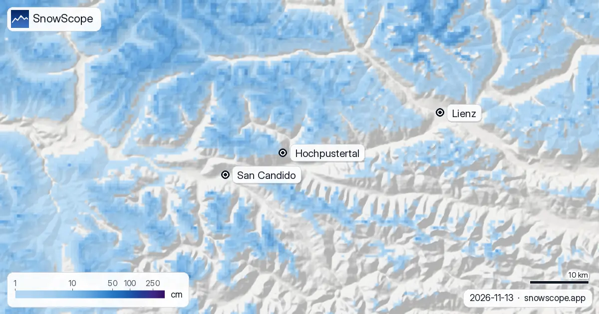

Sillian Pistenplan: Wo im Hochpustertal der Schnee liegt (13. November 2026)
Wer nach einem Pistenplan von Sillian sucht, findet Lifte und Abfahrten. Was er nicht verrät: wo heute wirklich Schnee liegt. Darum haben wir unsere Schneekarte über das Hochpustertal gelegt. Am 13. November beginnt das Weiß weit oben, mit 8,6 cm am Gipfel (2399 m), fast nichts an der Mittelstation (1739 m) und grüner Wiese an der Talstation beim Ort (1080 m).
Die Live-Schneeprognose für Sillian - Hochpustertal in der SnowScope-AppSchneehöhen, Pulverschnee-Alarme und 3D-Karte, gratis.

Das Skigebiet auf der Karte
Sillian liegt im Talboden des oberen Drautals in Osttirol, ein paar Minuten von der italienischen Grenze. Die Lifte führen vom Ortsrand hinauf zum Thurntaler; auf unserer Kartierung hat das Skigebiet 24 km Pisten und 7 Lifte zwischen 1080 m und 2399 m, 1319 m Höhenunterschied (OpenSkiMap-Zahlen, nicht die Angaben des Skigebiets).
Auf der Schneekarte steht der Pin Hochpustertal auf dem Skigebiet. Lienz ist die Stadt im Osten, talabwärts; San Candido, auf Deutsch Innichen, ist der erste Ort jenseits der Grenze im Westen. Das graue Band dazwischen ist der Talboden, wo noch kein Schnee liegt.
Was die Farben heute zeigen
Blau ist Schnee, von 1 cm im hellsten Ton bis 250 cm im dunkelsten. Rund um Sillian beginnt das Blau an den oberen Hängen: Unsere Zahlen ergeben 8,6 cm am Gipfel, fast alles neu, mit 7 cm in den letzten 24 Stunden und 13 cm in der vergangenen Woche. Die Mittelstation hat eine Spur, 0,7 cm, die Talstation ist aper.
Das dunklere Blau im Norden sind höhere Berge, die Villgratner Berge; das fleckige Blau südlich des Tals ist die Karnische Seite, wo heute weniger Schnee liegt.
Diese Woche: eine Linie quer über den Berg
Die nächsten Tage bringen Regen und Schnee gemischt. Am Gipfel ergeben die Vorhersagen, die wir prüfen, 10 bis 22 cm über die Woche, davon 4 bis 5 cm in den nächsten zwei Tagen. Unter etwa 1.800 bis 2.000 m fällt dasselbe Wetter als Regen.
Diese Linie zieht quer durch das Skigebiet. Die Mittelstation auf 1739 m liegt knapp darunter: Unsere Zahl dort sind 13 cm für die Woche, aber in den Referenzen fällt in dieser Höhe mehr als die Hälfte als Regen, also liegt am Boden deutlich weniger. Das Ortsende der Karte bleibt grau, mit höchstens 5 cm und meistens Regen.
Wann sich die Karte normalerweise füllt
In der Mitte unserer 46 vergangenen Winter (1980-81 bis 2025-26) liegen im November am Gipfel 36 cm, an der Mittelstation 9 cm und unten 1 cm. Der erste bleibende Schnee erreicht den Gipfel meist um den 17. September, die Mittelstation um den 8. Oktober und die Talstation um den 1. November; die untere Hälfte ist heuer also spät dran.
Der Dezember füllt die Karte: Ein üblicher Dezember bringt 74 cm am Gipfel, 32 cm an der Mittelstation und 13 cm unten. Die untersten Pisten werden hier nie tief verschneit, 26 cm in einem üblichen Februar, und letzten Winter hatte die Talstation nur 79 Schneetage statt der üblichen 152. Oben ist man sicherer: 50 cm oder mehr für 19 Wochen in 9 von 10 Wintern, und in Woche 13, Ende März, hatte das jeder unserer Winter, mit einer mittleren Schneehöhe von 147 cm.
Tipps für Skifahrer
- Pistenplan und Schneekarte zusammen lesen: Die Pisten sind jedes Jahr eingezeichnet, der Schnee nicht.
- Früh in der Saison öffnen die oberen Pisten zuerst; die Talfahrt nach Sillian mit dem Lift einplanen.
- Vor dem Gelände den Lawinenreport der Euregio Tirol lesen, der auch Osttirol abdeckt.
Weitere Karten (externe Seiten)
Quellen und Nachweise
- Hochpustertal, Osttirol Tourismus (Skigebiet, Lifte, Pistenplan) www.hochpustertal.com/
- Avalanche.report, Lawinenreport der Euregio Tirol avalanche.report
Zu diesen Zahlen
Schneewerte: das SnowScope-Schneemodell, Lauf vom 12. November 2026, auf drei Höhen des Skigebiets (Werte für die Fläche, keine Messungen des Skigebiets), und unsere Schneehistorie, 46 vergangene Winter (1980-81 bis 2025-26), ein höhenkorrigiertes Modell der Vergangenheit. Regen und Schnee gemischt, Spanne am Gipfel und Schneefallgrenze: unabhängige Wettervorhersagen auf denselben Höhen, die Prüfung, die jeder SnowScope-Beitrag vor der Veröffentlichung besteht. Aufbau des Skigebiets: der Pistenplan des Tourismusverbands (Quelle unten); Pistenlänge und Liftzahl: OpenSkiMap-Kartierung. Vorhersagen ändern sich: vor der Abfahrt auf die Karte schauen.
Offizielle Lawinenlageberichte: Avalanche.report – Euregio Tyrol
Diesen Bericht zitieren
Für Forschung, Lehre oder Presse: Zahlen und Grafiken sind unter CC BY 4.0 mit dieser Quellenangabe frei nutzbar.
SnowScope (2026), Sillian Pistenplan: Wo im Hochpustertal der Schnee liegt (13. November 2026), https://snowscope.app/blog/de/2026/11/sillian-ski-map-hochpustertal-snow-13-november-2026.html, abgerufen am 2026-11-13
SnowScope (Atlas Labs). (2026, November 13). Sillian Pistenplan: Wo im Hochpustertal der Schnee liegt (13. November 2026). SnowScope snow reports. https://snowscope.app/blog/de/2026/11/sillian-ski-map-hochpustertal-snow-13-november-2026.html
BibTeX
@misc{snowscope2026sillianskimaphochpustert,
author = {{SnowScope (Atlas Labs)}},
title = {Sillian Pistenplan: Wo im Hochpustertal der Schnee liegt (13. November 2026)},
year = {2026},
month = nov,
howpublished = {\url{https://snowscope.app/blog/de/2026/11/sillian-ski-map-hochpustertal-snow-13-november-2026.html}},
note = {Published 2026-11-13 14:31 UTC; accessed 2026-11-13}
}· CC BY 4.0 · Methoden, Daten und Werkzeuge →
Sillian - Hochpustertal: Schnee und Temperatur nach Höhe, dieser Winter vs letzter (Werkzeuge) →
Sillian - Hochpustertal folgen
Gratis: eine Nachricht, wenn Neuschnee kommt, und jeden Morgen die Vorhersage.
Weitere Schneeberichte

Schneefläche: 45.820 km² am 9. November, heute 38.440 km², 46.730 km² erwartet für den 14. November. Die Karte wird weniger weiß. Glacier 3000: …

Auf 1.308 m in Dent de Vaulion sind die heutigen 0 cm mehr, als dieses Datum in 34 der letzten 46 Winter brachte (üblich: 0 cm): Im Schnee ist schon …

Schneebericht in den Alpen, 11. November. Drei Zutaten, eine Auswahl: Heutige Schneehöhe, Neuschnee der letzten 72 Stunden und Prognose zeigen auf …